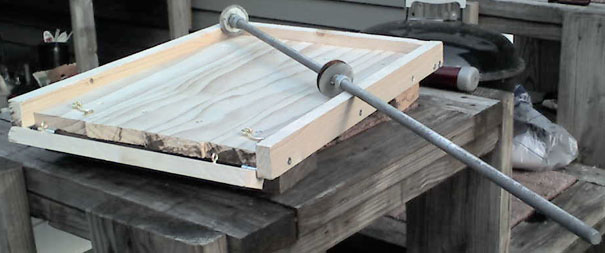
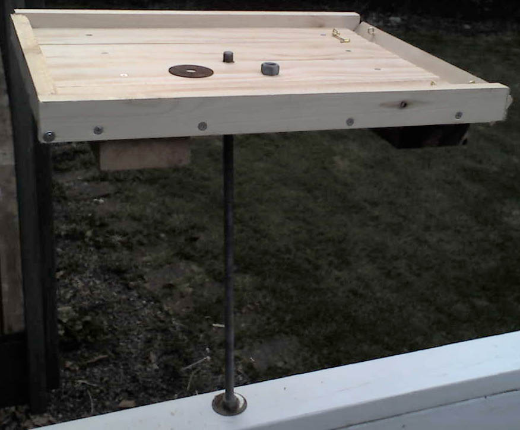

Platform Feeder for Birds (Version 2.0)

This is probably the easiest to build. It took me 1/2 day to build (including buying parts).
I have the plans as a PDF and as a PPT. The following instructions should be used in
conjunction with this PDF document.
Before beginning this project please take a look at the following pages. These pages contain things about simple
carpentry I learned. When you are finished you can visit the Main Page:
1) Wood Is Not The Size They say it is
2) The right tools are important, and they really
don't cost that much
3) Technique, a few hints and tricks help make the
job go easier.
I went to the store and bought a 6 foot piece of 1X4 inch pine (which, of course, isn't
really 1 inch by 4 inches). I also bought an 8 foot piece of 1X2 inch pine. I picked up 2 ea. one
inch hinges and 2 ea. small Hook and Eye latches. I already had a box of 2 inch deck screws at home so
I was done shopping.
I already had the threaded rod  ,
4 ea. washers and 4 ea. nuts from the first time I did this project. Version 1.0 lasted about 1.5 years
before the weather warped it out of shape. I am hoping that this design lasts 3 years. None of the wood
is treated because the birds will be eating off of this platform and I would rather not take the chance
of the birds getting sick because I painted / treated the wood. The below pictures were taken with the
platform feeder installed.
,
4 ea. washers and 4 ea. nuts from the first time I did this project. Version 1.0 lasted about 1.5 years
before the weather warped it out of shape. I am hoping that this design lasts 3 years. None of the wood
is treated because the birds will be eating off of this platform and I would rather not take the chance
of the birds getting sick because I painted / treated the wood. The below pictures were taken with the
platform feeder installed.
Page 1 - First cut the four bottom boards. Attach to the 2x4 boards using 2 inch deck screws. I learned
the hard way the 2.5 inch deck screws are a little too long. Allow at least 1 inch clearance on the
ends so that you can attach the hinges later in the project.
Page 2 - Now attach the 19 inch 1X2 boards to the sides. The sides of these boards should form a lip
around the edge so that the feed doesn't fall off the sides. Attach the 14 inch 1X2 board to the
back, again so that a lip is formed around the edge. Now attach the front 14 inch board to the bottom
using the 1 inch hinges. Attach the Hook and Eye latches to the floor of the platform and the 14 inch
board so that they will hold the 14 inch board closed. This is so that you can unlatch the hooks, flip
down the front board and use a hose to spray off all of the gunk that builds up.
Finally you drill a hole through a railing or anything that you can put the threaded rod through, put a
washer on the top and bottom of whatever you drilled through, run up the nuts tight. This should secure
the threaded rod to the railing. Now drill a hole in the center of the feeder, put a nut and a washer
on the end of the threaded rod, put the feeder on the rod. Finally secure the feeder to the threaded
rod by putting the washer on and tightening the nut.

Your feeder should now look like this (Version 1.0 is on the left ready to toss in the trash, version 2.0
is installed on the right ready for the birds to start feeding):

As always feel free to send me comments (my e-mail address is on the main page).
Main Page